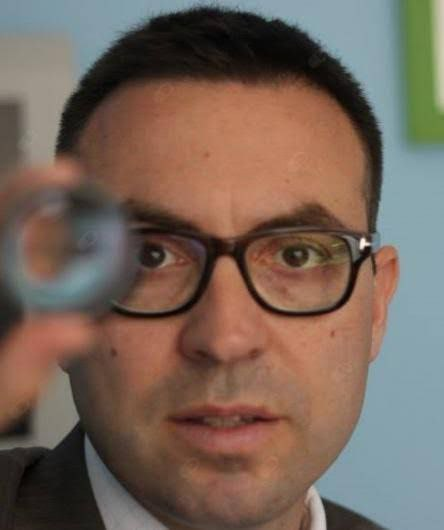
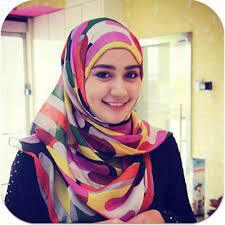
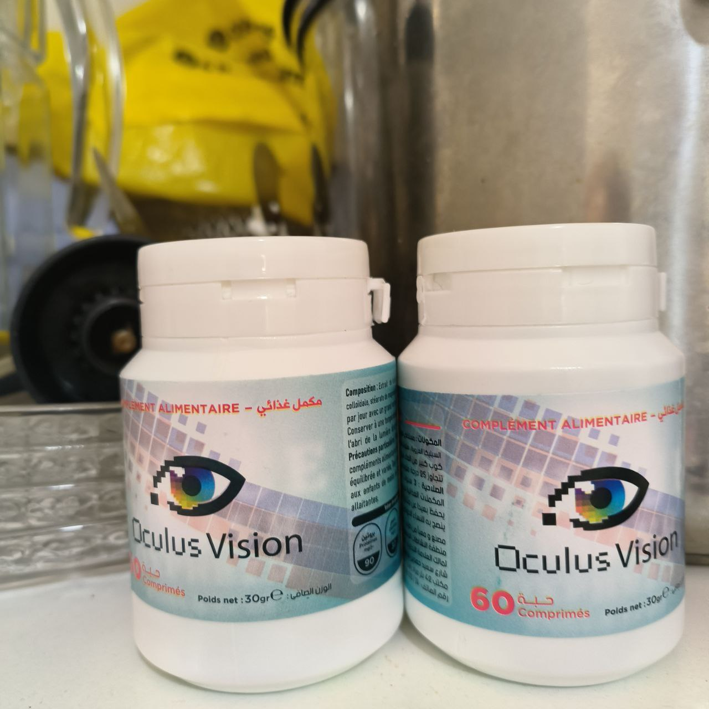
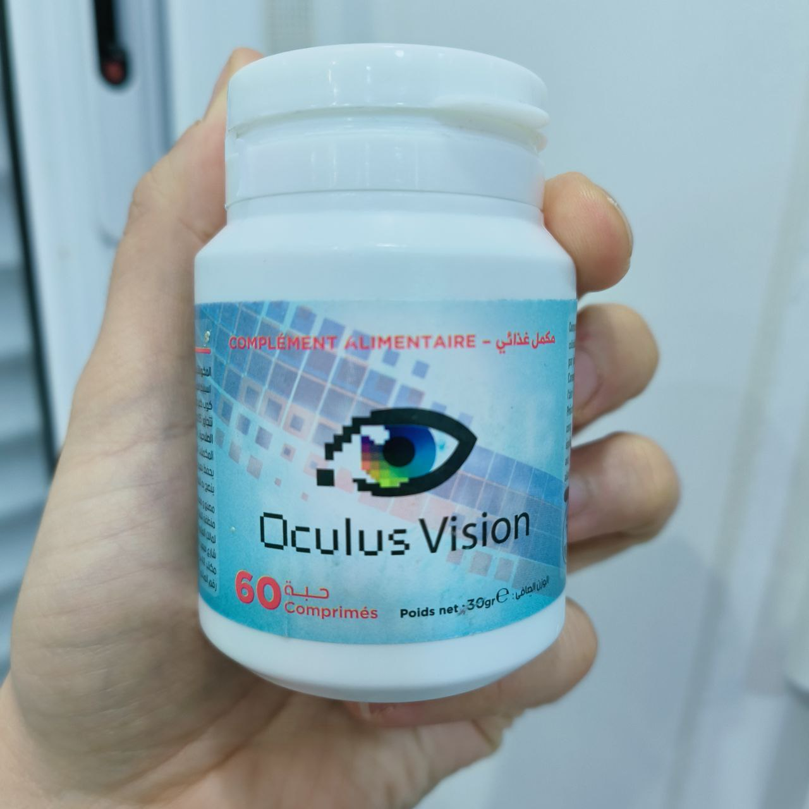
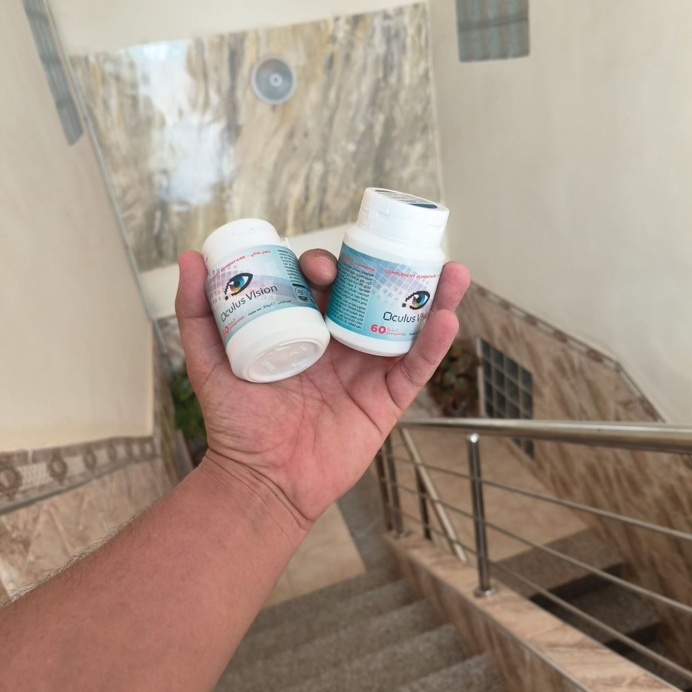
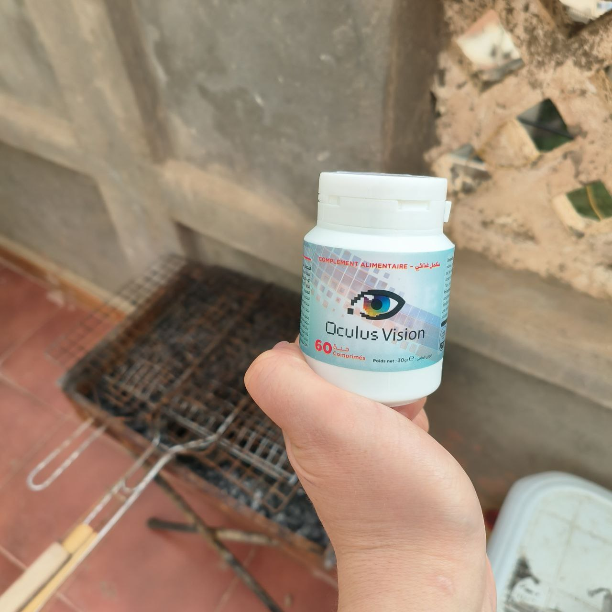
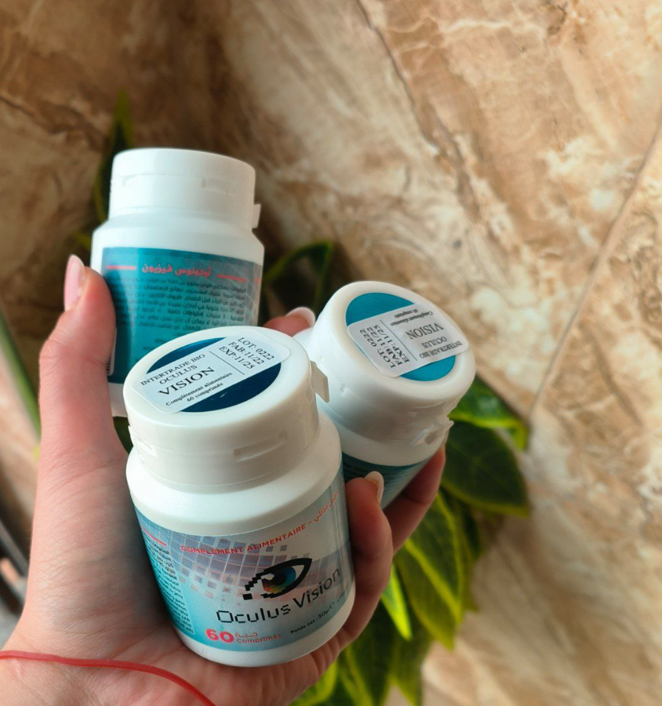

ما هو إعتام عدسة العين ؟
إعتام عدسة العين هي تكتل للعدسة الطبيعية في العين قد يؤدي إلى فقدان البصر. هذا هو السبب الأكثر شيوعًا لفقدان البصر لدى الأشخاص الذين تزيد أعمارهم عن 40 عامًا وهو أيضًا السبب الرئيسي للعمى في العالم. لذلك من المهم التعرف على الأعراض والحصول على الحل المناسب للتخلص من إعتام عدسة العين.
الأسباب المحتملة:
عندما تتراكم البروتينات في عدسة العين، فإنها تجعل الرؤية غائمة وغير واضحة، وهو أمر شائع لدى كبار السن.
وعلى الرغم من أن العمر هو السبب الرئيسي في معظم الحالات، إلا أن هناك أسباب أخرى لإعتام عدسة العين:
- أسباب خلقية: يولد بعض الأطفال مصابين بإعتام عدسة العين بسبب العدوى أو الإصابة أو سوء النمو في الرحم.
- أسباب ثانوية: وجود مشاكل صحية مزمنة مثل السكري الذي قد يؤدي إلى إعتام عدسة العين.
- عوامل أخرى: المواد السامة، الأشعة فوق البنفسجية، الإشعاع، تناول بعض المنتجات الكيميائية أو مدرات البول فهي من الأمور التي تسبب إعتام عدسة العين.
- الصدمة: إصابة العين قد تؤدي إلى إعتام عدسة العين.
عوامل الخطر:
العوامل التالية تزيد من خطر الإصابة بإعتام عدسة العين:
- الشيخوخة.
- مشاكل صحية مثل مثل السكري والسمنة وارتفاع ضغط الدم.
- عادات التدخين وشرب الكحول الزائد.
- التعرض المفرط لأشعة الشمس.
- تاريخ إصابة العين أو الجراحة.
- الاستخدام المطول للمنتجات الكيميائية .
العلامات والأعراض:
عندما تصبح الرؤية لديك غائمة ومعتمة بعض الشيء ولا تستطع تحمل أشعة الشمس، عندها يجب عليك التأكد من صحة العين وعدم الإصابة بإعتام عدسة العين، لاسيما إذا كنت في سن متقدم.
يستغرق إعتام عدسة العين وقت للظهور وقد لا تلاحظه إلا بعد حجب الضوء وصعوبة الرؤية.
أعراض إعتام عدسة العين الشائعة هي:
- ضبابية الرؤية:
- صعوبة في رؤية الأشياء الصغيرة:
- تغير في اللون:
- تأثير على الرؤية الليلية:
- تأثير على التباين:
- حساسية زائدة للوهج:
قد تشعر بأن الرؤية أصبحت ضبابية أو غير واضحة
يمكن أن يؤدي إعتام العدسة إلى صعوبة في رؤية التفاصيل الدقيقة.
قد يبدو لون العين باهتًا أو يتغير بسبب إعتام العدسة
قد تصبح رؤية الأشياء في الظلام أكثر صعوبة
قد يتغير التباين بين الأشياء، مما يؤدي إلى صعوبة في تحديد الحواف
قد تشعر بأن الأضواء الساطعة تسبب إزعاجًا أو وهجًا زائدًا
أشهر مشاكل العيون وأعراضها :
- النظر الطويل والنظر القصير (القرنية المعوجة):
- الزرق (الجلوكوما):
- إعتام عدسة العين
- التهاب الملتحمة:
- الجفاف العيني:
مشكلة شائعة تتعلق بتركيز العين وتركيز الضوء على الشبكية. يعاني الأشخاص المصابون بالنظر الطويل من صعوبة في رؤية الأشياء القريبة، بينما يعاني الأشخاص المصابون بالنظر القصير من صعوبة في رؤية الأشياء البعيدة.
هذه المشكلة تحدث عندما يرتفع ضغط السائل في العين، مما يؤدي إلى ضرر تدريجي للعصب البصري. تكون أعراض الزرق غير واضحة في المراحل المبكرة، ولكن مع مرور الوقت، يمكن أن يؤدي الإهمال إلى فقدان الرؤية الدائم.
تحدث عندما يتكون غشاء ضبابي في عدسة العين، مما يعوق تدفق الضوء ويسبب تشوهًا في الرؤية. الأعراض الشائعة للكاتاراكت تشمل الرؤية الضبابية، والتحسن المؤقت في الرؤية عند استخدام الإضاءة القوية، وتقلبات في حساسية العين للضوء.
هو التهاب الغشاء الملتحمي الذي يغطي الجزء الأمامي من العين والجفن. تشمل أعراض التهاب الملتحمة الحكة، والاحمرار، والتورم، والإفرازات العينية، وحساسية العين للضوء.
تحدث عندما تفتقر العين إلى الرطوبة الكافية أو عندما يكون نظام إنتاج الدموع غير فعال. تعتبر الحكة، والشعور بالحرقة، والإحساس بوجود جسم غريب، وزيادة الإفراز العيني بعض الأعراض الشائعة للجفاف العيني.
الحل الأفضل و الطبيعي للتخلص من مشاكل العيون بنصيحة خبراء العيون حول العالم :
سوف نعرفكم اليوم على الطبيب الشهير جاوم كاتالا مورا/ طبيب عيون و خبير بمشاكل العيون

من المعروف عن الطبيب جاوم انه يفضل الطرق الطبيعية في التخلص من المشاكل الصحية و ليست الطرق الكيميائية . لذا اليوم سوف نوضح لكم طريقته في التعامل و التخلص من مشاكل العيون بطريقة طبيعية :
يقول الطبيب جاوم انه إذا تم خلط بعض المكونات الطبيعية مع بعضها فسوف تتكون وصفة طبيعية 100% للتخلص من مشاكل العيون و حتى يمكنكم عملها بالمنزل إذا توفرت المكونات
و هنا سوف نسرد لكم المكونات التي نصح بها الطبيب و فوائد كل مكون منهم
- مستخلص اللوتين
- السيليكا الغروية
- ستيرات المغنيسيوم
مستخلص اللوتين يمكن أن يساعد في تحسين صحة العين، حيث يقوم بحماية العين من الأضرار التي يمكن أن تسببها الأشعة فوق البنفسجية والتي يمكن أن تؤدي إلى مشاكل مثل المياه البيضاء والماكولار ديجنيريشن.
السيليكا الغروية هي عنصر مهم لصحة الجسم، حيث تشكل جزءًا من العديد من الأنسجة في الجسم مثل العظام والأنسجة الضامة والغضاريف. كما أنها تعتبر مضاداً للأكسدة الطبيعي وتساعد في تقوية الجهاز المناعي والحفاظ على صحة الجلد والشعر والأظافر.
أن استهلاك الأطعمة الغنية بالمغنيسيوم يمكن أن يساعد في تحسين صحة العين، حيث يمكن الحصول على المغنيسيوم من الخضروات الورقية الخضراء والمكسرات والحبوب والبقوليات والأسماك واللحوم او عن طريق تناوله في شكل مكمل غذائي .
عند خلط هذه المكونات بشكل مناسب، ستؤدي إلى المساعدة على التخلص من مشاكل العيون و مشكلة إعتام عدسة العين (الكتاركت) و بهذا تكون لديكم طريقة طبيعية ووصفة طبيعية 100% للتخلص من مشاكل العيون و بنصيحة خبير .
لذا بعدما رأينا أهمية كل نبات منهم فإن هذه المكونات إذا تم خلطها معاً سوف تكون نتيجة إستخدامهم رائعة و لكن للأسف هذه المكونات يصعب إيجادها نظراً لغلاء أسعارها و لأن بعضها نادر .
نصيحة الطبيب الإسباني العالمي جاوم كاتالا مورا

" كل ما أستطيع أن انصحكم به هو أن تعثروا على هذه المكونات الطبيعية و تخلطوها معاً و سوف تنبهرون بالنتيجة . و دائماً أنصح الجميع بإستخدام هذه الوصفة لأنها مجربة من قبل العديد من مرضاي و لم يكن لها أي أضرار جانبية . "
اليوم جئنا لكم بمنتج سوف يغنيكم عن البحث عن هذه المكونات الصعب إيجادها و هو به كل هذه المكونات المذكورة بالأعلى إنه OculusVision و هو منتج مصنوع في الجزائر و مكوناته تم إستيرادها من دول اوروبية نظراً لندارة وجودها في الجزائر.

هذا مكمل غذائي طبيعي 100% تعتمد على مجموعة من المستخلصات النباتية النباتية المذكورة بالأعلى و هنا سنقول لكم بعض الفوائد لهذا المنتج الرائع :
فوائد OculusVision :
- يساعد في القضاء على قصر النظر و طول النظر
- يساعد على التخلص من ألام العديد من المشاكل مثل : التهاب الملتحمة - الزرق (الجلوكوما): - تهيج العيون - جفاف العين
- دعم صحة العين
- تحسين حدة البصر بمضادات الأكسدة والمغذيات الوقائية مثل اللوتين
- بالإضافة إلى ذلك ، يساعد OculusVision في مكافحة إجهاد العين وإبطاء تطور التنكس البقعي المرتبط بالعمر.
- التخلص من إلتهاب العيون و ألمها المزعج
- التخلص من الصداع الدائم نتيجة مشاكل العيون
- المساعدة على التخلص من إعتام عدسة العين (الكتاركت)
طريقة إستخدام OculusVision
يجب تناول حبة واحدة يومياً مع كوب كبير من الماء مع وجبات الطعام .
بالطبع نعرف ان المشاكل البصرية هي قضية شائعة تؤثر على الكثير من الأشخاص في الجزائر ، ويمكن أن تأتي في مقدمة مشاكل الحياة لانها تؤثر على عملك و بيتك و حياتك بالكامل
و الأن المنتج متوفر في الجزائر بصناعة جزائرية و مكونات مستوردة من اوروبا
كيف تتمكنوا من شراء OculusVision في الجزائر بالخطوات
- إملأ نموذج الطلب بالأسفل .
- سوف يتواصل معك مختص للرد على كل أسئلتك و تاكيد عنوان التوصيل معك
- ليس عليك دفع أي شيء مقدماً و الدفع فقط عند الإستلام
تخفيض 65% !عند شرائك المنتج في الجزائر اليوم
نموذج الطلب الرسمي
السعر قبل التخفيض : 17000 DZD
السعر بعد التخفيض : 5990 DZD
عند شرائك دورة OculusVision
مراجعة الزبناء
194 تعليق

سناء محمد
Je ne vois pas bien de mon œil gauche. J'ai aussi un astigmatisme progressif. J'ai peur de devenir aveugle…

جميلة
Il existe actuellement de nombreux compléments alimentaires naturels contrefaits. Dites-moi où obtenir l'original Oculus Vision ?

عبد الحميد
J'ai guéri du glaucome en deux semaines ! Étonnamment, mes yeux peuvent à nouveau voir parfaitement.

أروى
Acheté Oculus Vision à la pharmacie. Je l'utilise depuis 5 jours, ça n'aide pas, ma vision n'est pas restaurée !

محمد
Je ne peux pas décrire à quel point je suis heureux ! Merci beaucoup! Maintenant, mes yeux sont à nouveau en bonne santé !

أنور
Mon œil droit ne pouvait presque rien voir, sans l'aide de Oculus Vision, il n'y aurait aucune chance…

سميرة
Ma vue s'est considérablement détériorée au cours de la dernière année en raison du travail à l'ordinateur... Ni les lentilles spéciales ni les pilules pour les yeux ne m'ont aidé. Je pensais que j'allais complètement perdre la vue jusqu'à ce que j'apprenne l'existence de Oculus Vision. Avec son aide, mon amie a retrouvé sa vision de 90%, elle a décidé de l'essayer et n'a absolument aucun regret !

ياسين
Ce complément alimentaire naturel fonctionne vraiment ! J'ai également commandé sur ce site sans prépaiement. La commande est arrivée en 3-4 jours. Ne retardez, sinon il sera peut-être trop tard !

صلاح
C'est bien que nous ayons des enfants aussi intelligents ! Je lui souhaite santé et bonheur !

آيات
Je ne pensais pas que Oculus Vision m'aiderait, j'ai donc subi une opération il y a un mois. Mais quand j'ai commencé à l'utiliser, mon ophtalmologiste a été choqué par les résultats. Presque plus de cataractes. Il m'a demandé ce que je prenais et m'a dit qu'il n'avait jamais entendu parler de ce complément alimentaire naturel, sinon il me l'aurait prescrit tout de suite et ne m'aurait pas envoyé me faire opérer !

خلود
J'ai vu ce spécialiste dans une revue médicale. Merci pour votre honnêteté!

منير
شكراً لكم! لقد لحقت بالتخفيض .

اسامة
أنا أعمل طوال اليوم على الكمبيوتر و لذلك نظري ضعف كثيراً مؤخراً و لكن بعد إستخدامي لهذا المكمل الغذائي حقاً أشعر بتحسن كبير شكراً لكم و أنصح الجميع به !

صباح
لقد طلبته لنفسي لاني كنت اعاني من إعتام عدسة العين و النتيجة كانت مذهلة ! شكراً لكم !